Reasons to Join Us
- Meet Road Cyclists.
- Enjoy Riding Your Bike in a Group.
- Do Exercise While Travelling Through Beautiful Landscapes.
Sportives completed
𝐑𝐨𝐲𝐚𝐥 𝐂𝐨𝐮𝐧𝐭𝐲 𝐂𝐲𝐜𝐥𝐞 𝐂𝐡𝐚𝐥𝐥𝐞𝐧𝐠𝐞
| Sunday, May 11th 2025. | |
| START & FINISH | Seneschalstown GAA club. |
|---|---|
| Organized by | Yellow Furze Road Club. |
| Distance | 50 km. |
| Completed in | 02h:04m:46s |
 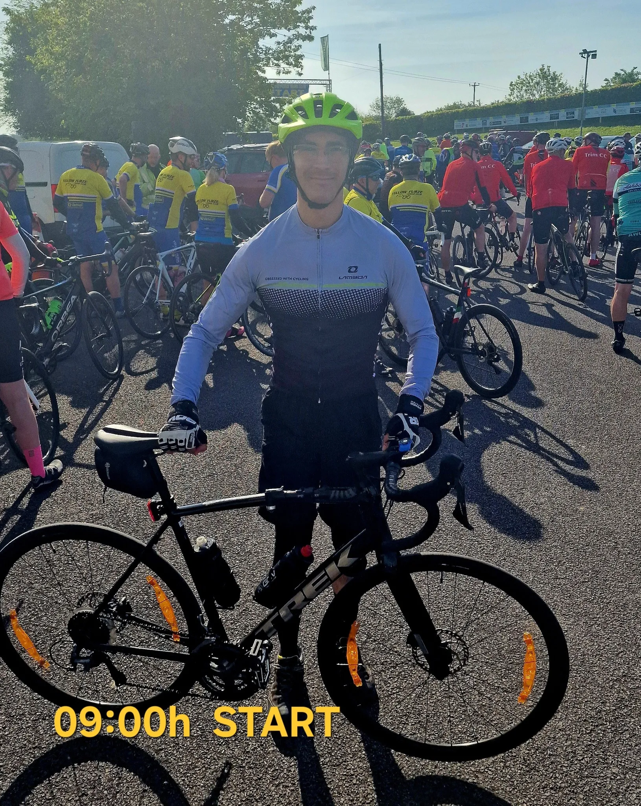
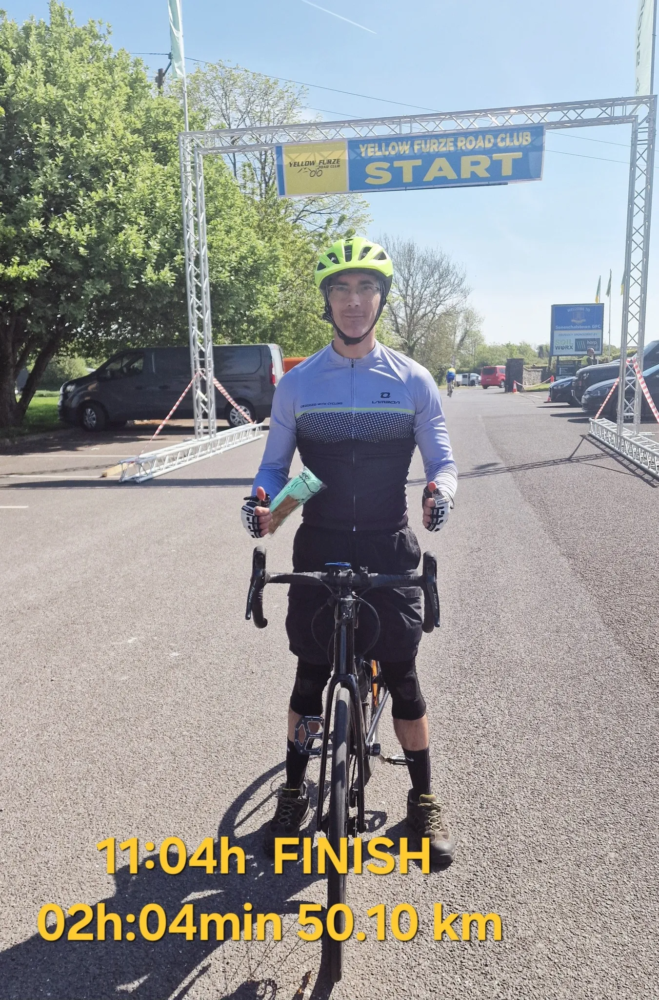
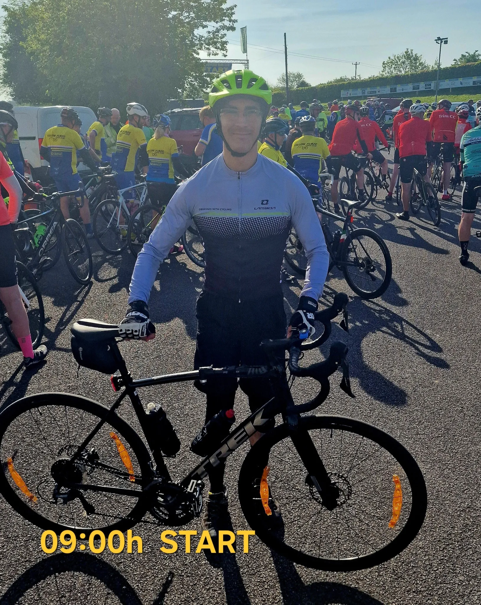
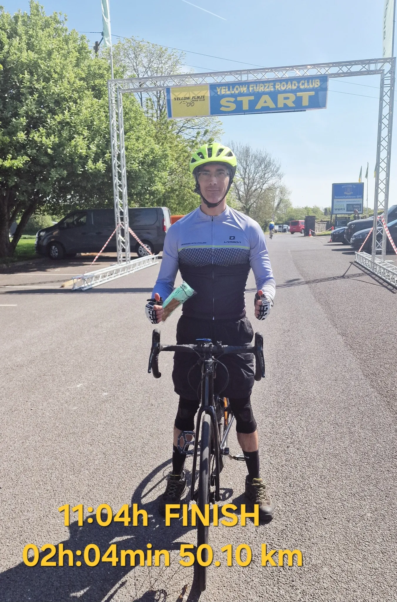

𝐀𝐬𝐡𝐛𝐨𝐮𝐫𝐛𝐞 𝐖𝐡𝐞𝐞𝐥𝐞𝐫𝐬 𝐒𝐩𝐨𝐫𝐭𝐢𝐯𝐞
| Sunday, May 18th 2025. | |
| START & FINISH | Swans Bar Curragha. |
|---|---|
| Organized by | Ashbourne Wheelers Cycling Club. |
| Distance | 55 km. |
| Completed in | 01h:56m:23s |


 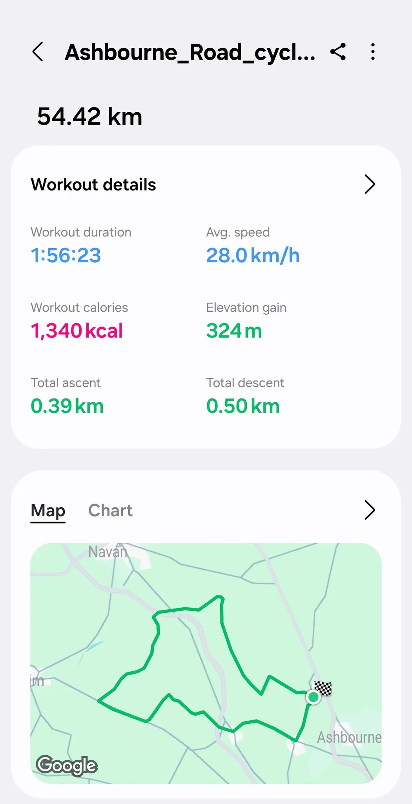
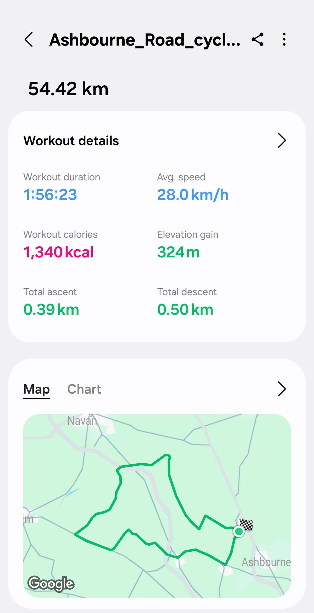
Tour of Louth 𝐒𝐩𝐨𝐫𝐭𝐢𝐯𝐞
| Sunday, June 1st 2025. | |
| START & FINISH | DKIT Sports Arena. |
|---|---|
| Organized by | Cuchulainn Cycling Club. |
| Distance | 50 km. |
| Completed in | 01h:50m:25s |
 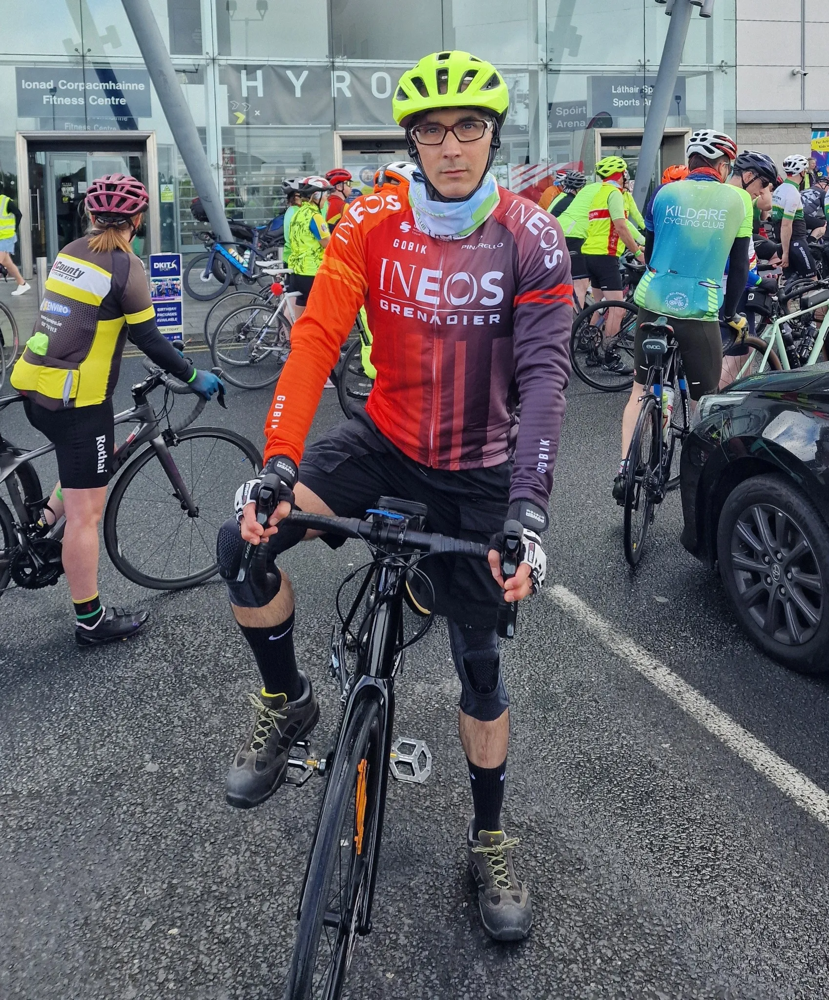
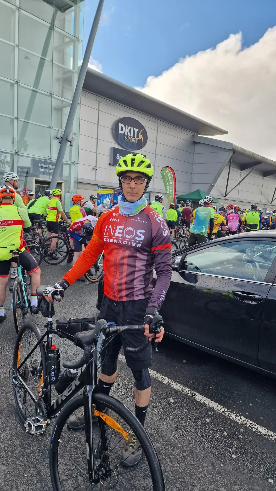
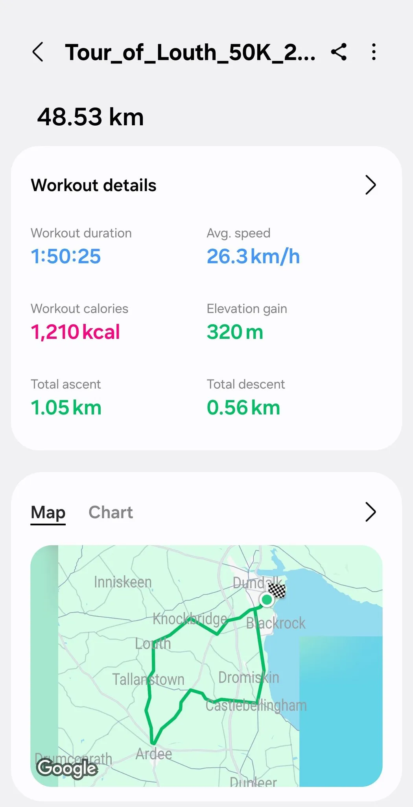
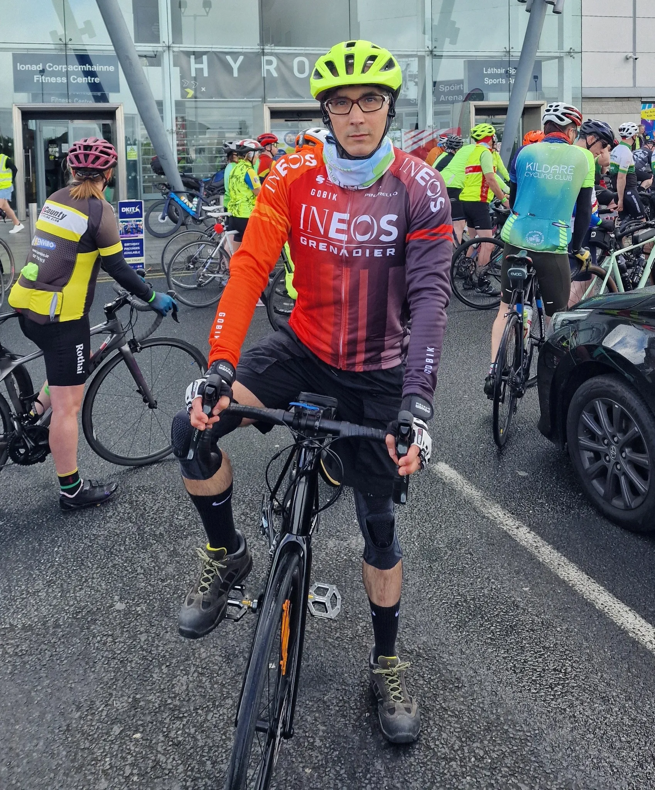
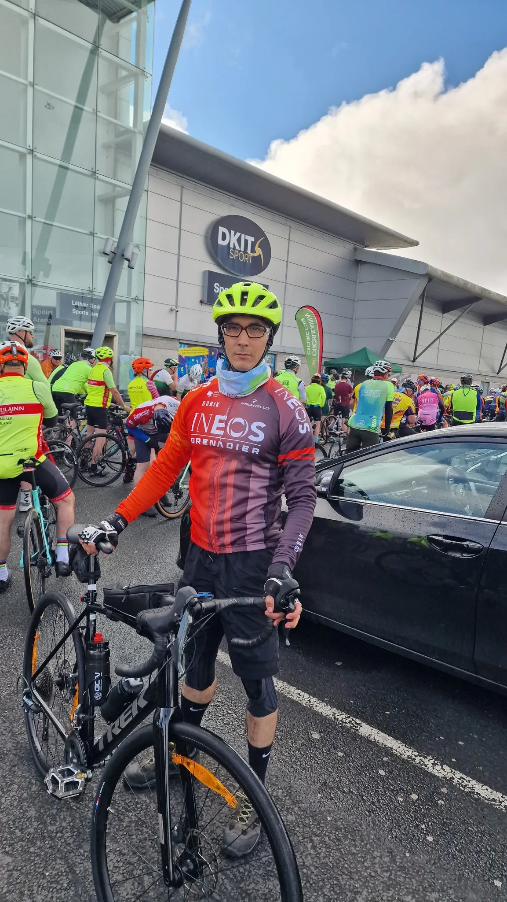
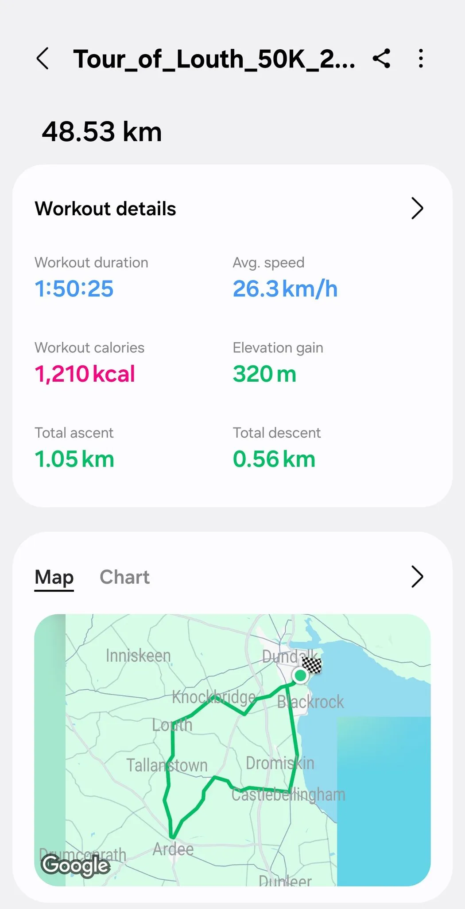
Windmill wheelers Sportive
| Sunday, June 8th 2025. | |
| START & FINISH | Elphin Community Center. |
|---|---|
| Organized by | Windmill Wheelers Cycling Club. |
| Distance | 100 km. |
| Completed in | 03h:34m:03s |
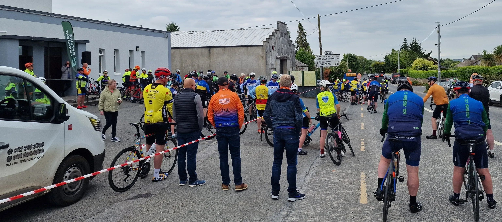
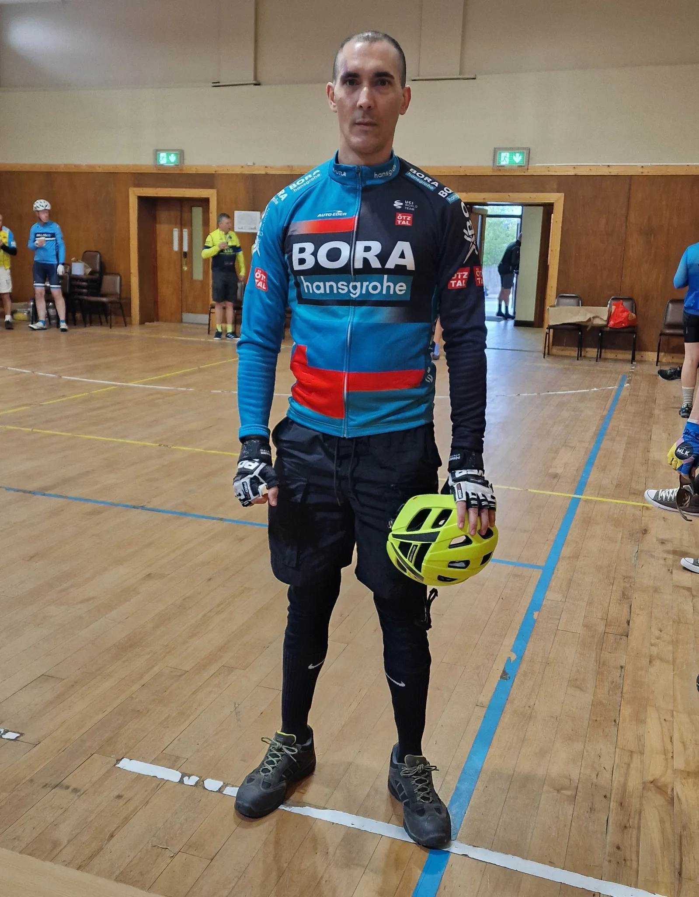
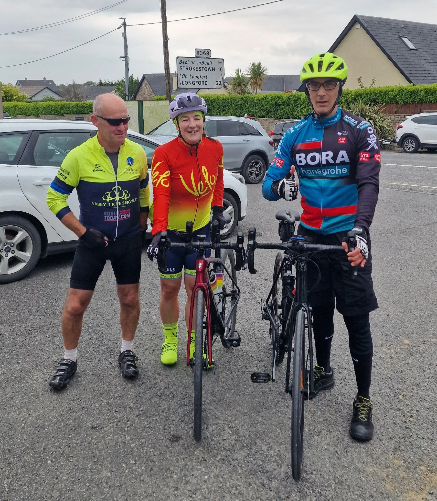

Tour of Monaghan Sportive
| Sunday, June 15th 2025. | |
| START & FINISH | St Mellans Park. |
|---|---|
| Organized by | Emivale Cycling Club. |
| Distance | 90 km. |
| Completed in | 03h:29m:14s |